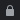

Как обезопасить себя в интернете
- Регулярно выполняйте резервное копирование данных. Например, в облачном хранилище на Google Диск и не забывайте делать бэкап для всех устройств, которые используете.
- Не пересылайте информацию по картам банка (номер карты, ПИН-код, паспортные данные) через мессенджеры социальных сетей.
- Лучше завести отдельную карту для покупок товаров в интернете. Если оплачиваете покупки в интернете, проверьте, чтобы на сайте было защищенное соединение: адрес сайта должен начинаться с «https://» и иметь безопасное подключение (такой значок перед адресом)
. - Не скачивайте сомнительные приложения и не запускайте неизвестные файлы.
- Не отвечайте на спам.
- Ограничьте данные по личной информации в соцсетях — обязательно воспользуйтесь настройками конфединциальности и настройте двухфакторную аутентификацию.
- Сообщения о призах скорее всего ложные. Но если сомневаетесь — найдите официальный сайт компании и обратитесь в службу поддержки.
- Сообщения от друзей с просьбой дать денег в долг перепроверяйте звонком.
- Используйте сложные пароли и регулярно их меняйте.
- Не пренебрегайте антивирусными программами.
- Используйте безопасный режим для ребенка — проводите беседы с ним о цифровой безопасности и объясняйте, что не вся информация в сети достоверна.
- Не пользуйтесь пиратским программным обеспечением — это всегда риск.
- Проверяйте подлинность сайта — в поддельных разница может быть всего в одной букве.